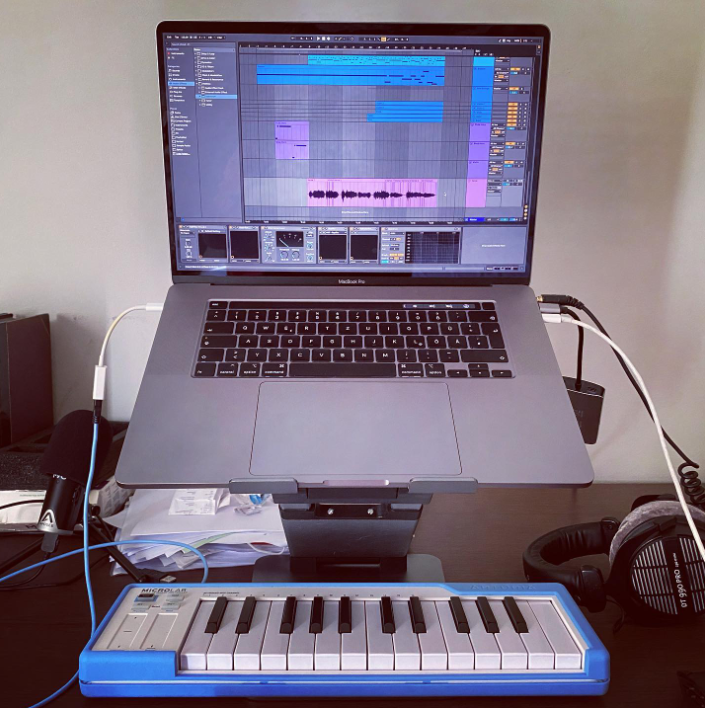
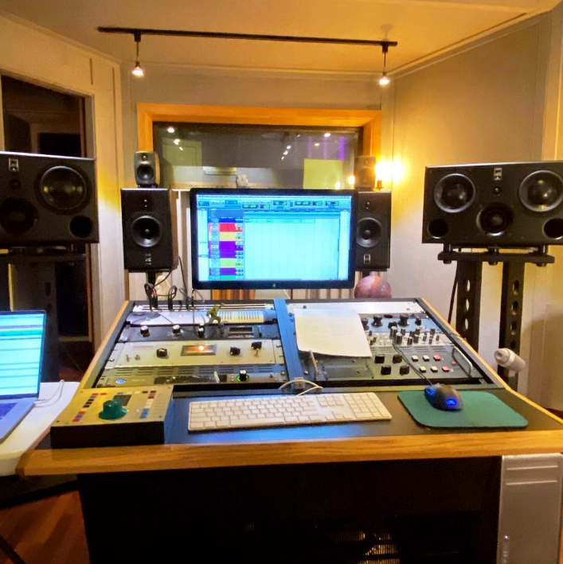
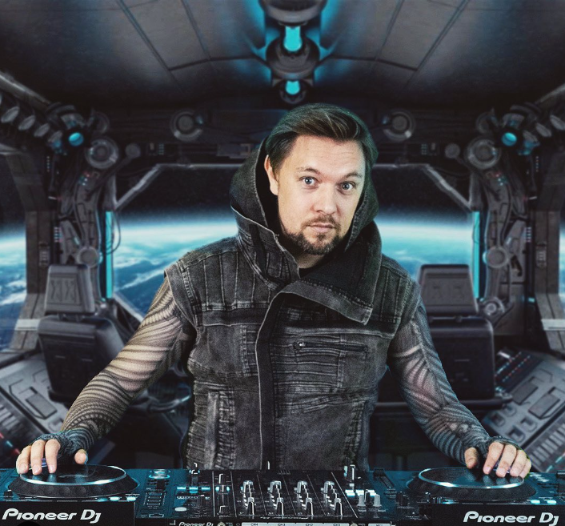
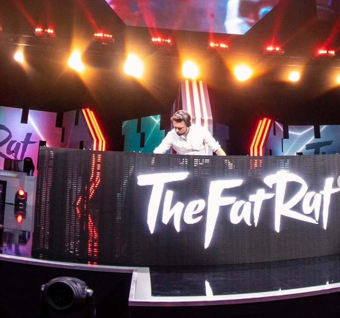

Gallery

I grew up with both, gaming and electronic music. In the 90s, electronic dance music was already huge in Germany. I went to events like the Love Parade in Berlin where the size of the audience was over a million people.

So it came only natural that when I started producing myself it was electronic music. The other big influence for me was gaming. I started when the first Game Boy came out, had an NES, Master System, Mega Drive, SNES, and even a NEO-GEO. Together with classical orchestra music, they have been my main influence. Mario Paint on the SNES was the first time I made music on a computer..

I’ve just made music that I personally like. And because I have been a gamer for so long my music automatically had a video game vibe to it which lead to the gaming community picking it up. But it was more a natural thing, rather than me aiming for a specific market..

The first years of my career. They were basically „no career at all“. I worked with a lot of people throughout that time, but they all gave up at some point. Some after a few days, some after a year or two. For me it was never an option. After lots and lots of setbacks and almost going bankrupt, there was something deep inside me that kept me going.

In my adult life, every single year has been better than the year before. And 2019 was no exception. I went fully independent again and have a completely new team around me which allows doing everything on a bigger scale.

There‘s a lot of new stuff coming in 2020. I‘m working on my first studio album. In early 2020 my first music video will come out. It‘s almost finished and it looks amazing. Also, I‘m working on a mobile game, which has always been a dream for me. The idea has been in my mind for years and now I‘m finally teaming up with the right people to execute it.

it‘s surreal to play in front of an arena and realising how many of the people in there know my songs. And also to know that millions of people are watching at home..